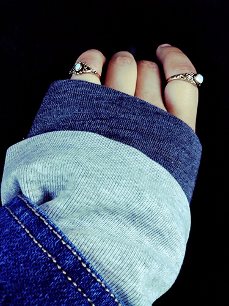
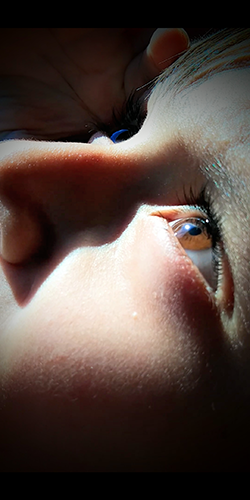
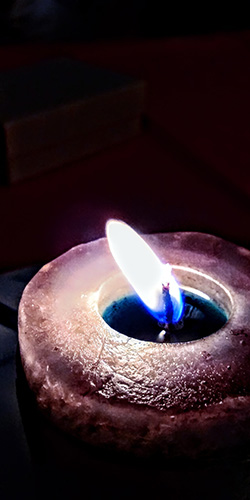
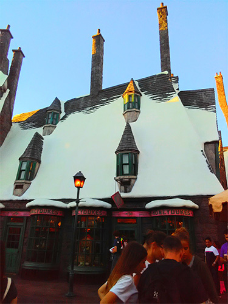
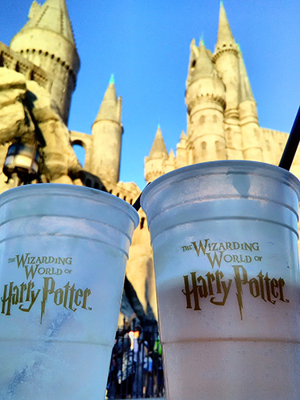
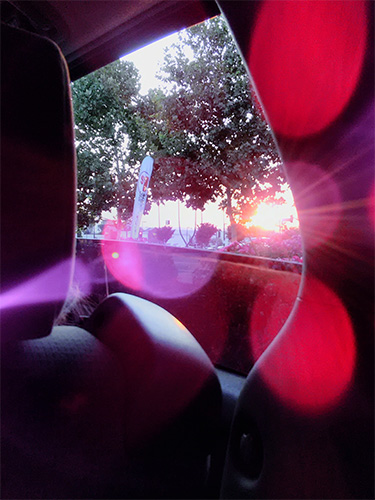

Other Pictures
These photographs are ones that I also love looking at and am proud of taking,
but they simply don't fall into a category quite yet and this is simply because
I don't have many pictures of (for example) hands. Either way, I hope you enjoy
looking at them just as much as I do!





